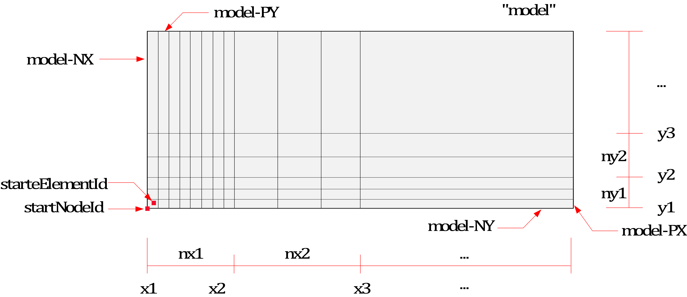
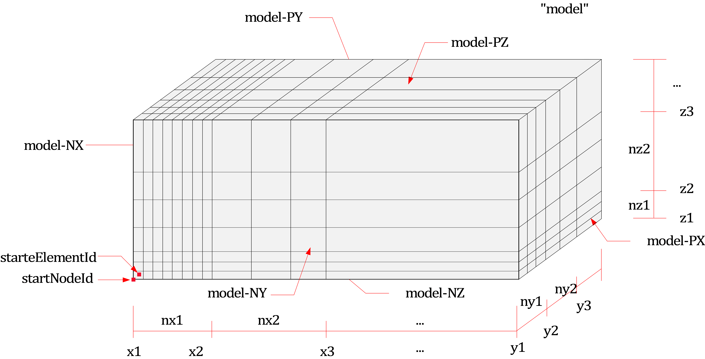
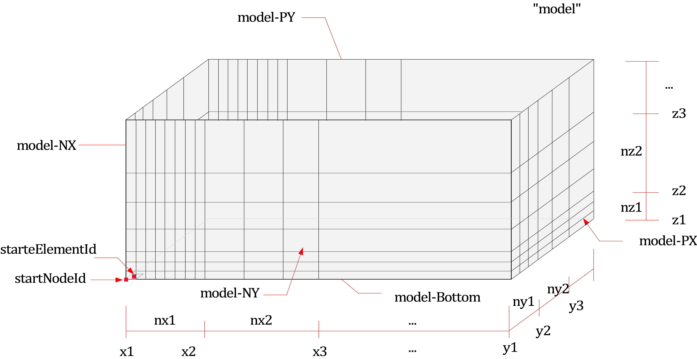
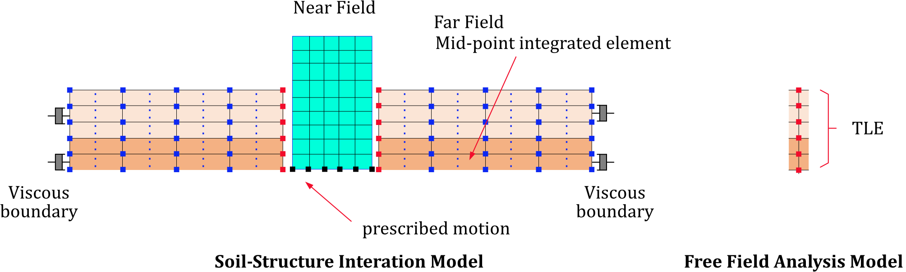
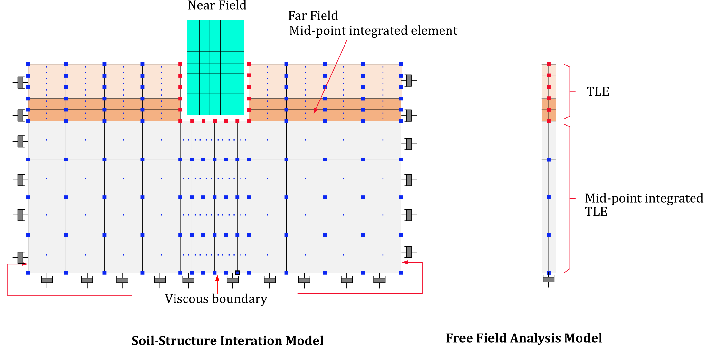
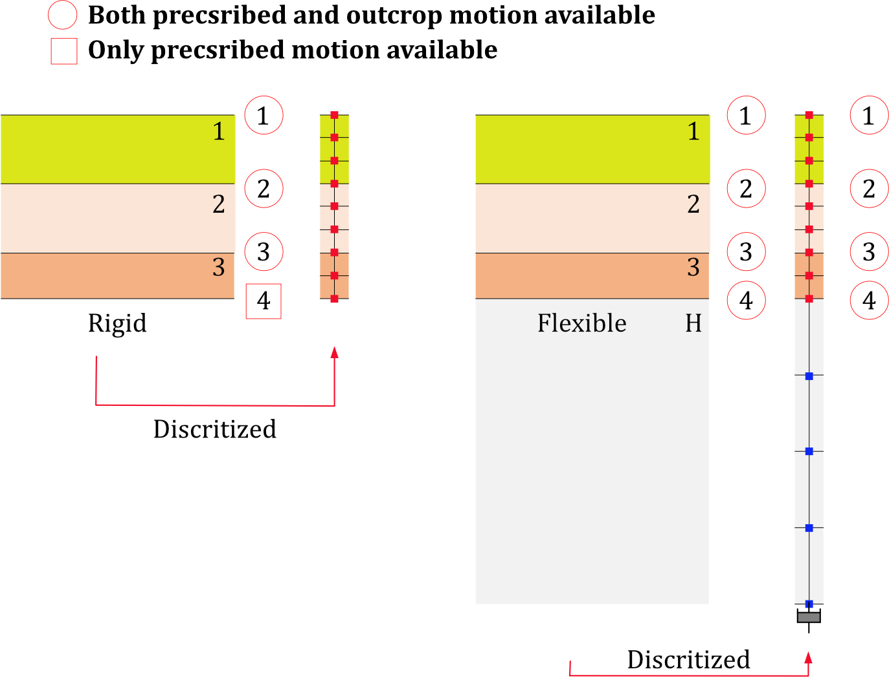

15. Modelling
15.1 *Include
The *INCLUDE command inserts an external text file. It is used to manage complexity in input files.
*Include, File=file, [P=parameters]
Keyword line
- File=file: file name
- parameters: parameter expression. Must be enclosed in double quotes (
"), but this is optional.
Example
*INCLUDE, File=concrete.inp
*INCLUDE, File=model.inp, P="<S>=100. <T>=15.3, <Solver>={A,10}"
UnitSystem notes
*Includeinserts the included text into the current input stream.- hfAnalyzer and hfStudio use the same UnitSystem interpretation rule for
*Include. - If the current input or host DB already has a global
*Environment, Type=UnitSystem, the global UnitSystem inside the included file is treated as the source unit, and the imported values are converted to the current global UnitSystem. - If the current input or host DB does not have a global UnitSystem, the global UnitSystem inside the included file is not adopted automatically, and the values are read as raw numbers without conversion.
- If sections, functions, or special definitions need to carry their own units, use each command's local
UnitSystemor the equivalent local-unit field. - hfStudio
File > Import File,File > From Clipboard, andInp Text > Applyfollow the same rule. See GUI Guide - File for the details.
15.2 *Parameter
Defines a parameter expression.
*Parameter, Name=name, "key=val, ..." [,Default]
Keyword line
- Name=name: Name of the parameter expression
- "key=value, ...": Parameter expression, enclosed in double quotation marks (" ").
- Default: If specified, designates this parameter expression as the default (optional).
The name of a *Parameter expression must be unique and cannot be duplicated.
When multiple *Parameter statements are present, Default can be used only once.
Additionally, the *Parameter statement can only appear in the top-level input file
—it is not allowed within included files (e.g., those added via *Include).
The parameter expression must be enclosed in double quotation marks ("") and written in the form key=value, ..... When applied, each key is replaced with the corresponding value.
To avoid accidental replacement of unintended substrings, it is recommended to enclose the parameter key using characters that are not commonly used in normal text—such as <A> or $A$. For example, in "<E>=20E9, <B>=7.3", <E> is replaced with 20E9, and <B> with 7.3. Also, tokens inside a parameter expression may be grouped using braces {}. For example, in "<K>={R,12.3}, <B>=7.3", <K> is replaced with R,12.3.
For more details on the use of parameter expressions, refer to the overview section.
Example
*Parameter, Name=VM, "<E>=2E9, <nu>=0.18", Default
*Parameter, Name=CM, "<E>=2E9, <nu>=0.18"
*Material, Type=IsoElasticity, Name=myMat
<E>, <nu>
15.3 *Distribution
Assigns, clears, or resets element properties.
*Distribution, Type=type[, Remove]
target, ...
...
Keyword line
-
TYPE=type: Distribution type (required)
- Section: Assign or clear element sections
- BeamCS: Assign or clear beam element coordinate systems
- BeamEndRelease: Assign or clear beam end-release codes
- EmbeddedLineSpline: Assign or clear EmbeddedLine spline references
- EmbeddedLineHostElset: Assign or clear EmbeddedLine host elsets
- MCKElementScaleFactor: Assign or reset the scale factor for Spring, EarthSpring, and PointMass elements
- MCKElementCS: Assign or clear the element coordinate system for Spring, EarthSpring, and PointMass elements
- MovingSpringInitialPosition: Assign or reset the initial position of MovingSpring elements
- ShellThickness: Derive and assign shell nodal thicknesses from a projection plane
-
Remove: Optional. When present, each data line contains only targets and the selected property is cleared or reset to its default value.
General rules:
- Target tokens can be element numbers, elsets, or element number patterns such as
start:end[:spacing]. Exception:Type=ShellThicknesstargets nodes and follows different target rules (see 15.3.9). - Duplicate target tokens in one data line are not allowed.
- When a target id pattern references missing elements, those elements are ignored without error.
- Clear and reset flows must use
Removeon the keyword line. Omitting the last token on a normal data line is no longer a clear syntax.
15.3.1 *Distribution, Type=Section
Assigns or clears the section of target elements.
*Distribution, Type=Section
target1,target2,..., section
...
*Distribution, Type=Section, Remove
target1,target2,...
...
Data lines
- target1,target2,...: Element numbers, elsets, or element number patterns (required)
- section: Section name (required unless
Removeis used)
Sections may be assigned in *Element, but they can also be assigned or cleared later with *Distribution, Type=Section.
Example
*Distribution, Type=Section
left, section1
right, middle, section2
1,2,3,4, section3
*Distribution, Type=Section, Remove
2:10
15.3.2 *Distribution, Type=BeamCS
Assigns or clears the ECS (Element Coordinate System) for three-dimensional beam elements.
*Distribution, Type=BeamCS
target1,target2,..., beamcs
...
*Distribution, Type=BeamCS, Remove
target1,target2,...
...
Data lines
- target1,target2,...: Element numbers, elsets, or element number patterns for three-dimensional beam elements (required)
- beamcs: BeamCS name (required unless
Removeis used)
Example
*CoordinateSystem, Type=BeamCS, Name=beamcs
90
*Distribution, Type=BeamCS
1, 2, 3, beamcs
beamSet, beamcs
*Distribution, Type=BeamCS, Remove
beamSet2, beamSet3
15.3.3 *Distribution, Type=BeamEndRelease
Assigns or clears end-release conditions for beam elements.
*Distribution, Type=BeamEndRelease
target1,target2,..., releaseCode
...
*Distribution, Type=BeamEndRelease, Remove
target1,target2,...
...
Data lines
- target1,target2,...: Element numbers, elsets, or element number patterns for beam elements (required)
- releaseCode: Combination of
Rx1,Ry1,Rz1,Rx2,Ry2,Rz2(required unlessRemoveis used). For two-dimensional beam elements, onlyRz1andRz2are valid.
Example
*Distribution, Type=BeamEndRelease
1, 2, 3, Rz1|Rz2
beamSet, Rx1|Ry1|Rz1
*Distribution, Type=BeamEndRelease, Remove
1:10
15.3.4 *Distribution, Type=EmbeddedLineSpline
Assigns or clears the spline for EmbeddedLine elements.
*Distribution, Type=EmbeddedLineSpline
target1,target2,..., spline
...
*Distribution, Type=EmbeddedLineSpline, Remove
target1,target2,...
...
Data lines
- target1,target2,...: Element numbers, elsets, or element number patterns for EmbeddedLine elements (required)
- spline: Spline name (required unless
Removeis used)
Example
*Distribution, Type=EmbeddedLineSpline
1,2,3, curve1
tendonSet, curve2
*Distribution, Type=EmbeddedLineSpline, Remove
tendonSet1,tendonSet2
15.3.5 *Distribution, Type=EmbeddedLineHostElset
Assigns or clears the host elset for EmbeddedLine elements.
*Distribution, Type=EmbeddedLineHostElset
target1,target2,..., hostElset
...
*Distribution, Type=EmbeddedLineHostElset, Remove
target1,target2,...
...
Data lines
- target1,target2,...: Element numbers, elsets, or element number patterns for EmbeddedLine elements (required)
- hostElset: Host elset name (required unless
Removeis used)
Example
*Distribution, Type=EmbeddedLineHostElset
1,2,3, girder
tendonSet, crossbeam
*Distribution, Type=EmbeddedLineHostElset, Remove
tendonSet1,tendonSet2
15.3.6 *Distribution, Type=MCKElementScaleFactor
Assigns or resets the scale factor for Spring, EarthSpring, and PointMass elements.
*Distribution, Type=MCKElementScaleFactor
target1,target2,..., sf
...
*Distribution, Type=MCKElementScaleFactor, Remove
target1,target2,...
...
Data lines
- target1,target2,...: Element numbers, elsets, or element number patterns for Spring, EarthSpring, and PointMass elements (required)
- sf: Scale factor (required unless
Removeis used)
Remove resets the scale factor to the default value 1.0.
Example
*Distribution, Type=MCKElementScaleFactor
1, 2, 3, 2.5
wall, 2.5
*Distribution, Type=MCKElementScaleFactor, Remove
wall
15.3.7 *Distribution, Type=MCKElementCS
Assigns or clears the ECS (Element Coordinate System) for Spring, EarthSpring, and PointMass elements.
*Distribution, Type=MCKElementCS
target1,target2,..., ucs
...
*Distribution, Type=MCKElementCS, Remove
target1,target2,...
...
Data lines
- target1,target2,...: Element numbers, elsets, or element number patterns for Spring, EarthSpring, and PointMass elements (required)
- ucs: UCS name (required unless
Removeis used)
Example
*CoordinateSystem, Type=UCS, Name=springCS
1, 1, 0, 0, 1, 0
*Distribution, Type=MCKElementCS
1, 2, 3, springCS
springSet, springCS
*Distribution, Type=MCKElementCS, Remove
springSet2, springSet3
15.3.8 *Distribution, Type=MovingSpringInitialPosition
Assigns or resets the initial position of MovingSpring elements.
*Distribution, Type=MovingSpringInitialPosition
target1,target2, ..., x, y
...
*Distribution, Type=MovingSpringInitialPosition, Remove
target1,target2, ...
...
Data lines
- target1,target2,...: Element numbers, elsets, or element number patterns for MovingSpring elements (required)
- x, y: Initial position values (required unless
Removeis used)
Remove resets the initial position to 0,0. For moving springs targeting beam elements, only the x value is referenced.
Example
*Distribution, Type=MovingSpringInitialPosition
100, -5, 0.
*Distribution, Type=MovingSpringInitialPosition, Remove
101:110
15.3.9 *Distribution, Type=ShellThickness
Derives and assigns nodal thicknesses of shell elements (S3, S3F, S4, S4F) from a projection plane.
*Distribution, Type=ShellThickness
target1,target2,...
n1, h1
n2, h2
n3, h3
[n4, h4]
*Distribution, Type=ShellThickness
target1,target2,...
x1, y1, z1, h1
x2, y2, z2, h2
x3, y3, z3, h3
[x4, y4, z4, h4]
Data lines
- target1,target2,...: First data line. Node numbers, node number patterns, node sets, or surfaces to which the thickness is applied (required). A node number pattern is in the form of
start:end:spacing, where spacing can be omitted if it is 1. If a surface is specified, the nodes within the surface are the targets. - n, h: Anchor node number and the thickness at that location (required) [L]
- x, y, z, h: Anchor position coordinates [L] and the thickness at that location (required) [L]
This type is block structured. For other *Distribution types each data line is an independent assignment, but here one block is one projection. The first data line lists the projection targets, and the following 3 to 4 anchor lines define the projection plane and its thickness distribution. The plane is evaluated at each target node and the interpolated thickness is stored per node; export writes only the resolved *Nprop, Type=ShellThickness form.
- All anchors in one block must use the same form, either node form (
n, h) or coordinate form (x, y, z, h); mixing is not allowed. - Each anchor thickness must be zero or greater, and a negative interpolated nodal thickness is an error.
- Collinear anchors are an error.
- The foot of the perpendicular from each target node must lie within the face region defined by the anchors; otherwise it is an error. Extrapolation is not supported.
- If the four anchors do not lie on the same plane (warped), the projection uses the bilinear surface interpolated from the four anchors by shape functions.
- Use multiple blocks when multiple planes are needed.
Removeis not supported for this type. Use*Nprop, Type=ShellThickness, Removeto remove nodal thicknesses (see 2.6.1).
Example
*Distribution, Type=ShellThickness
slab
1, 0.1
100, 0.2
105, 0.3
*Distribution, Type=ShellThickness
1:200:5, wall
0., 0., 0., 0.1
10., 0., 0., 0.2
10., 5., 0., 0.3
0., 5., 0., 0.4
15.4 *Model
Generates a pre-defined template model.
*Model, Type=type
...
Keyword line
-
Type=type: Type of model (required)
- Block2D: Generates a rectangular mesh using 2D solid elements
- Block3D: Generates a rectangular mesh using 3D solid elements
- Cylinder: Generates a cylinder mesh using 3D solid elements
- Wall: Generates a rectangular mesh using shell elements
- RectangularTank: Generates a rectangular tank mesh using shell elements
- CylindericalTank: Generates a cylinderical tank mesh using shell elements
- CurveExtrusion: Generate a shell-element mesh by extruding a 2D cross-section curve along a spline path
- FarField2D: Generates a 2D mesh for SSI analysis and creates equivalent loads from the results of free field analysis
- FarField3D: Generates a 3D mesh for SSI analysis and creates equivalent loads from the results of free field analysis
15.4.1 *Model, Type=Block2D
Generates a rectangular mesh using 2D solid elements.
*Model, Type=Block2D
name, startNodeId, startElementId, elementType, section
x1, x2, ..., x{n+1}, nx1, nx2, ..., nx{n}
y1, y2, ..., y{n+1}, ny1, ny2, ..., ny{n}
ix1, iy1, ...
First data line
- name: Representative name. This name serves as the basis for naming nsets, elsets, surfaces, loads, etc., created by this command.
- startNodeId, startElementId: Starting node and element numbers. Use "Auto" for automatic calculation.
- elementType: Type of element to apply, such as CPS4, AC2D4, etc., for 2D rectangular solid elements.
- section: Section to apply (optional; if omitted, no section is applied to the elements).
Second and third data lines
- x1, x2, ..., x{n+1}, nx1, nx2, ..., nx{n}: x range and number of elements.
- y1, y2, ..., y{n+1}, ny1, ny2, ..., ny{n}: y range and number of elements.
Fourth data line (optional)
- ix, iy, ...: Block numbers to be deleted (ix, iy).
This command generates entities such as nsets, elsets, and surfaces in addition to nodes and elements.
- Nset:
name(all nodes) - Elset:
name(all elements) - Surface:
name(all outer surfaces),name-NX(surface where X=xmin),name-PX(surface where X=xmax),name-NY(surface where Y=ymin),name-PY(surface where Y=ymax). If there are blocks to be deleted, surfaces adjacent to the deleted regions are created asname-i-j-PX,name-i-j-NX,name-i-j-PY,name-i-j-NY, where i and j are the numbers of the deleted regions.

Fig. 15.5-1. Block2D mesh generationExample
*Material, Type=IsoElasticity, Name=steel
2E6, 0.2
*Section, Type=Solid, Name=solid
steel, 0.1
*Model, Type=Block2D
Cant, 1, 1, CPS4, solid # Generate elements with solid section
0, 20, 10
0, 4, 4
*Model, Type=Block2D
CantX, Auto, Auto, CPS4 # Generate elements without section
0, 20, 10
0, 4, 4
15.4.2 *Model, Type=Block3D
Generates a rectangular mesh using 3D solid elements.
*Model, Type=Block3D
name, startNodeId, startElementId, elementType, section
x1, x2, ..., x{n+1}, nx1, nx2, ..., nx{n}
y1, y2, ..., y{n+1}, ny1, ny2, ..., ny{n}
z1, z2, ..., z{n+1}, nz1, nz2, ..., nz{n}
ix, iy, iz, ...
First data line
- name: Representative name. This name serves as the basis for naming nsets, elsets, surfaces, loads, etc., created by this command.
- startNodeId, startElementId: Starting node and element numbers. Use "Auto" for automatic calculation.
- elementType: Type of element to apply, such as C3D8, AC3D8, etc., for 3D hexahedral solid elements.
- section: Section to apply (optional; if omitted, no section is applied to the elements).
Second, third, and fourth data lines
- x1, x2, ..., x{n+1}, nx1, nx2, ..., nx{n}: x range and number of elements.
- y1, y2, ..., y{n+1}, ny1, ny2, ..., ny{n}: y range and number of elements.
- z1, z2, ..., z{n+1}, nz1, nz2, ..., nz{n}: z range and number of elements.
First data line for deletion
- ix, iy, iz, ...: Block numbers to be deleted (ix, iy, iz).
This command generates entities such as nsets, elsets, and surfaces in addition to nodes and elements.
- Nset:
name(all nodes) - Elset:
name(all elements) - Surface:
name(all outer surfaces),name-NX(surface where X=-xmin),name-PX(surface where X=xmax),name-NY(surface where Y=ymin),name-PY(surface where Y=ymax),name-NZ(surface where Z=zmin),name-PZ(surface where Z=zmax), If there are blocks to be deleted, surfaces adjacent to the deleted regions are created asname-i-j-k-PX,name-i-j-k-NX,name-i-j-k-PY,name-i-j-k-NY,name-i-j-k-NZ,name-i-j-k-PZ, where i, j, and k are the numbers of the deleted regions.

Fig. 15.5-2. Block3D mesh generationExample
*Material, Type=IsoElasticity, Name=steel
2E6, 0.2
*Section, Type=Solid, Name=solid
steel, 1
*Model, Type=Block3D
Cant, 1, 1, C3D8, solid # Generate elements with solid section
0, 20, 10
0, 4, 4
0, 2, 2
*Model, Type=Block3D
Cant, Auto, Auto, C3D8 # Generate elements without section
0, 20, 10
0, 4, 4
0, 2, 2
15.4.3 *Model, Type=Cylinder
Creates a cylindrical mesh.
*Model, Type=Cylinder
name, startNodeId, startElementId, elementType, section
x0, y0, z0, R, nseg
h1, h2, ..., h{n}, nh1, nh2, ... nh{n}
First data line
- name: Representative name used as the base name for entities like nsets, elsets, surfaces, and loads created by this command.
- __startNodeId, startElementId __: Starting node and element IDs. Use "Auto" for automatic calculation.
- elementType: Type of the element to apply, such as 3D hexahedral solid elements like C3D8, AC3D8.
- section: Section to be applied (optional; if omitted, no section is applied to the elements).
Second data line
- x0, x0, z0: Origin coordinates.
- R: Radius in the xy-plane.
- nseg: No. of segments in the perimeter of quarter outer circle. If nseg is less than 4, 4 is used. (optional, default 0)
Third data line
- h1, h2, ... h{n}, nh1, nh2, ..., nh: Heights in the z-direction and the number of elements along each height.
In addition to nodes and elements, the command generates other entities like nsets, elsets, and surfaces:
- Nset : name (all nodes)
- Elset : name (all elements)
- Surface : name (all outer surfaces), name-Top(top surface), name-Bottom(bottom surface), name-Side(side surface)
Example
*Material, Type=Acoustic, Name=Water
2190.4E+6, 1000 # bulkModulus, density ... compressible
*Section, Type=Solid, Name=Water
Water, 1 # thickness
*Model, Type=Cylinder
Water, auto, auto, AC3D8, Water
0,0,0,18.3,4 # x0, y0, z0, R, nseg
12.2,5 # h1,...,nh1,...
15.4.4 *Model, Type=Wall
Generates a rectangular mesh using shell elements.
*Model, Type=Wall
name, startNodeId, startElementId, elementType, section
ox, oy, oz, x1, x2, x3, y1, y2, y3
lxmin, lxmax, nlx
lymin, lymax, nly
- name: Representative name. This name serves as the basis for naming nsets, elsets, surfaces, loads, etc., created by this command.
- startNodeId, startElementId: Starting node and element numbers. Use "Auto" for automatic calculation.
- elementType: Type of element to apply, such as 4-node shell elements (S4, S4F, etc.) or 8-node solid shells (CS8).
- section: Section to apply (optional; if omitted, no section is applied to the elements).
Second data line
- ox, oy, oz: Reference point of the local coordinate system.
- x1, x2, x3: Defines the x-axis of the local coordinate system.
- y1, y2, y3: Another vector defining the plane of the local coordinate system. The y-axis is created as y = x × z.
Third and fourth data lines
- lx1min, lxmax, nlx: Range and number of elements for the first axis (local x) in the local coordinate system.
- lymin, lymax, nly: Range and number of elements for the second axis (local y) in the local coordinate system.
This command generates entities such as nsets and elsets in addition to nodes and elements.
- Nset:
name(all nodes) - Elset:
name(all elements)
When applying CS8 elements, a single layer of solid shell is created based on shell thickness. If no shell section is provided, a thickness of 1 is applied.
Example
*Material, Type=IsoElasticity, Name=steel
2E6, 0.2
*Section, Type=Shell, Name=beam
steel, 0.1
*Model, Type=Wall
beam, Auto, Auto, S4, beam
0, 0, 0, 1, 0, 0, 0, 1, 0
0, 20, 20
0, 4, 4
15.4.5 *Model, Type=RectangularTank
Generates a rectangular tank mesh using shell elements with an open top surface.
*Model, Type=RectangularTank
name, startNodeId, startElementId, elementType, wallSection, bottomSection
x1, x2, ..., x{n+1}, nx1, nx2, ..., nx{n}
y1, y2, ..., y{n+1}, ny1, ny2, ..., ny{n}
z1, z2, ..., z{n+1}, nz1, nz2, ..., nz{n}
First data line
- name: Representative name. This name serves as the basis for naming nsets, elsets, surfaces, loads, etc., created by this command.
- startNodeId, startElementId: Starting node and element numbers. Use "Auto" for automatic calculation.
- elementType: Type of element to apply, such as S4F for rectangular shell elements.
- wallSection, bottomSection: Sections for the wall and bottom surfaces (optional; if omitted, no section is applied to the elements).
Second, third, and fourth data lines
- x1, x2, ..., x{n+1}, nx1, nx2, ..., nx{n}: x range and number of elements.
- y1, y2, ..., y{n+1}, ny1, ny2, ..., ny{n}: y range and number of elements.
- z1, z2, ..., z{n+1}, nz1, nz2, ..., nz{n}: z range and number of elements.
This command generates entities such as nsets, elsets, and surfaces in addition to nodes and elements.
- Nset:
name(all nodes) - Elset:
name(all elements) - Surface:
name(all outer surfaces),name-NX(surface where X=-xmin),name-PX(surface where X=xmax),name-NY(surface where Y=ymin),name-PY(surface where Y=ymax),name-Bottom(surface where Z=zmin)

Fig. 15.5-3. RectangularTank mesh generationExample
*Material,Type=IsoElasticity,Name=mat
30E9, 0.18, 0, 2000. # E, nu, alpha, density
*Section, Type=Shell, Name=shell
mat, 0.01 # h
*Model, Type=RectangularTank
Cant, 1, 1, S4F, shell, shell
0, 20, 10
0, 4, 4
0, 2, 2
*Model, Type=RectangularTank
CantX, Auto, Auto, S4F # Generate elements without section
0, 20, 10
0, 4, 4
0, 2, 2
15.4.6 *Model, Type=CylindericalTank
Creates a cylindrical tank mesh with an open top using shell elements.
*Model, Type=CylindericalTank
name, startNodeId, startElementId, elementType, wallSection, bottomSection
x0, y0, z0, R, nseg
h1, h2, ..., h{n}, nh1, nh2, ... nh{n}
First data line
- name: Representative name used as the base name for entities like nsets, elsets, surfaces, and loads created by this command.
- __startNodeId, startElementId __: Starting node and element IDs. Use "Auto" for automatic calculation.
- elementType: Type of the element to apply, such as rectangular shell elements like S4F.
- wallSection, bottomSection: Sections for the wall and bottom (optional; if omitted, no section is applied to the elements).
Second data line
- x0, x0, z0: Origin coordinates.
- R: Radius in the xy-plane.
- nseg: No. of segments in the perimeter of quarter outer circle. If nseg is less than 4, 4 is used. (optional, default 0)
Third data line
- h1, h2, ... h{n}, nh1, nh2, ..., nh: Heights in the z-direction and the number of elements along each height.
In addition to nodes and elements, the command generates other entities like nsets, elsets, and surfaces:
- Nset : name (all nodes)
- Elset : name (all elements)
- Surface : name (all outer surfaces), name-Bottom(bottom surface), name-Side(side surface)
Example
*Material, Type=IsoElasticity, Name=Tank
2.0776E+10, 0.17, 0, 2300 # E(MPa), nu, alpha, density
*Section, Type=Shell, Name=Tank
Tank, 1.2
*Model, Type=CylindericalTank
Tank, auto, auto, S4F, Tank, Tank
0,0,0,18.3,4 # x0, y0, z0, R, nseg
12.2,1.8,5,2 # h1,...,nh1,...
15.4.7 *Model, Type=CurveExtrusion
Generate a shell-element mesh by extruding a 2D cross-section curve along a spline path.
*Model, Type=CurveExtrusion
name, spline, nseg, startNodeId, startElementId, elementType, section
x1,y1
x2,x2
...
First data line
- name: Base name that will be used for automatically generating node sets, element sets, surfaces, loads, etc. created by this command
- spline: Reference spline curve used as the extrusion path
- nseg: Number of elements to generate along the extrusion direction
- startNodeId, Starting node and element IDs. If set to Auto, they are assigned automatically
- elementType: Element type to be used, e.g., S4F (4-node quadrilateral shell element)
- section: Optional. Section assigned to the generated elements (no assignment if omitted)
Second data line and subsequent data lines
- xi, yi: Coordinates of the 2D cross-section
The input 2D cross-section points (xi, yi) are connected in order to form the section geometry. This section is then swept along the spline path, generating an S4/S4F shell mesh. If the last point is identical to the first point, the section is treated as a closed loop, and the extrusion produces a cylindrical or tube-like curved shell mesh along the given path.
Each section point (xi, yi) is transformed into a 3D location using a local coordinate system defined at each point along the spline. The local basis is constructed as follows: the tangent vector of the spline defines ex; ey is computed from the cross product of ex and a predefined up vector; and ez = ex × ey, completing an orthogonal triad. The (ey, ez) plane becomes the placement plane for the 2D cross-section.
The default up vector is (0, 0, 1). However, when the tangent ex becomes nearly parallel to the global z-axis—causing the cross product to approach zero—the up vector is automatically switched to (0, 1, 0) to avoid singularities and maintain a stable section coordinate frame.
Example
*Geometry, Type=Spline, Name=tunnelLine
0, 0, 0
10, 2, 1
20, 3, 2
30, 5, 3
40, 4, 2
50, 1, 1
60, 0, 0
*Material, Type=IsoElasticity, Name=mat
20E9
*Section, Type=Shell, Name=wall
mat, 0.3
*Model, Type=CurveExtrusion
testTunnel, tunnelLine, 100, Auto, Auto, S4F, wall
-4.800, 0.000
-4.900, 1.000
-5.000, 2.000
-5.000, 3.000
-5.000, 4.000
-4.924, 4.868
-4.698, 5.710
-4.330, 6.500
-3.830, 7.214
-3.213, 7.826
-2.500, 8.320
-1.710, 8.689
-0.868, 8.915
0.000, 9.000
0.868, 8.915
1.710, 8.689
2.500, 8.320
3.213, 7.826
3.830, 7.214
4.330, 6.500
4.698, 5.710
4.924, 4.868
5.000, 4.000
5.000, 3.000
5.000, 2.000
4.900, 1.000
4.800, 0.000
4.000,-0.100
3.000,-0.200
2.000,-0.300
1.000,-0.400
0.000,-0.500
-1.000,-0.400
-2.000,-0.300
-3.000,-0.200
-4.000,-0.100
-4.800, 0.000
15.4.8 *Model, Type=FarField2D
Generates a 2D mesh for SSI (Soil-Structure Interaction) analysis, performs free field analysis, and calculates equivalent loads.
*Model, Type=FarField2D
name, startNodeId, startElementId, outputFormat
acceleration, iz, Direct|Outcrop, rcx, x0
nearMinX, nearMaxX, nearMeshCountX, farMeshSizeX, farMeshCountX
ytop
E1, nu1, density1, xi1, h1, ny1
E2, nu2, density2, xi2, h2, ny2
...
En, nun, densityn, xin, hn, nyn
{bottomNSet} | {EHalf, nuHalf, densityHalf, xiHalf, farMeshSizeY, farMeshCountY}
First data line
- name: Representative name. This name serves as the basis for naming nsets, elsets, surfaces, loads, etc., created by this command.
- startNodeId, startElementId: Starting node and element numbers. Use "Auto" for automatic calculation.
- outputFormat: Output time history file format for equivalent loads and ground motion at the bottom surface. Options are auto, csv, or npy. If "csv" is chosen, output will be in CSV format only; if "npy" is chosen, output will be in NPY format only. If "auto" is selected, it checks the number of columns in the generated function file: if 16,364 or fewer, it outputs as CSV; otherwise, it outputs as NPY. The default: "auto".
Second data line
- acceleration: Acceleration time history function. Must be a TimeSeries function with two components, corresponding to the acceleration in the X and Y directions.
- iz, Direct|Outcrop: Layer boundary number (1-based) where the time history is applied and the input method (if Direct, it treats the acceleration input as being at iz; if Outcrop, it treats it as outcrop motion).
izcan be specified up to(number of layers) + 1. However, if the base condition is rigid (Rigid) and specified as Outcrop, it can be specified only up to(number of layers)(to specify Outcrop, there must be underlying layer information). - rcx: Inverse of the horizontal apparent velocity of the incoming seismic wave. Calculated as
rcx = 1/cx, wherecx = cp/lx = cs/mx, withcpandcsbeing the P-wave and S-wave velocities, and(lx, ly, lz)and(mx, my, mz)being the unit direction vectors for P-waves and S-waves, respectively. The use ofrcxinstead ofcxis due to the fact that the direct cosinelxandmxare zero for vertically incident waves. - x0: Reference point for the incoming seismic wave.
Third data line
- nearMinX, nearMaxX, nearMeshCountX, farMeshSizeX, farMeshCountX: Range and number of elements for the near field in the X direction, size of the far field mesh, and number of elements.
Fourth data line
- ytop: Position of the ground surface.
- f0: Reference frequency (Hz). Applied when approximating using stiffness-proportional damping for effective load calculations (for single-layer ground, the first natural frequency is
vs/4H; for multi-layer ground, the equivalent accelerationvse = sum(Hi)/sum(Hi/Vsi)is calculated and then applied tovse/4H; damping ratio is set to 5% based on material damping).
Fifth data line and subsequent data lines
- E1, nu1, density1, xi1, h1, nz1: Material properties and height for the first layer of ground from the surface.
- E2, nu2, density2, xi2, h2, nz2: Material properties and height for the second layer of ground from the surface (optional).
- ...
- En, nun, densityn, xin, hn, nzn: Material properties and height for the nth layer of ground from the surface (optional).
Last data line
- bottomNset: Name of the nset at the base if rigid conditions are applied.
- EHalf, nuHalf, densityHalf, xiHalf, farMeshSizeY, farMeshCountY: Material properties for the bedrock under flexible conditions, and the size and number of elements for the far field in the Y direction.
The conditions can be set for either Rigid or Flexible based on whether the stiffness of the base is considered. The CPE4PMDL element is used for the SimplePMDL formulation to handle infinite regions, and a viscous boundary is set at the outer edge of the far field mesh. In addition to nodes and elements, entities such as the given name and bottomNset will generate:
- Materials:
name-1,name-2, ... (materials corresponding to layers),name-half(material corresponding to the half space). - Sections:
name-1,name-2, ... (sections corresponding to layers),name-half(section corresponding to the half space). - Elsets:
name(all elements),name-1,name-2, ... (elements corresponding to layers),name-half(elements corresponding to the half space). - Surfaces:
name-Boundary(outer boundary of the far field),name-NNX(near field-boundary where X=nearXMin),name-PX(near field-boundary where X=nearXMax),name-NY(near field-boundary where Y=ymin),name-PY(near field-boundary where Y=ymax),name-Bottom(near field-boundary where Z=zmin for flexible conditions). - Constraints:
name-Boundary(viscous boundary). - Loads:
name-Effective(equivalent loads),bottomNset-Motion(prescribed motion load for rigid conditions). - Functions:
name-Effective(time function used for effective loads),bottomNset-Motion(time function used for node motion in rigid conditions).
The generated time history files are:
<DB>-name-Freefield.csv|npy: Time history file for free field analysis results showing layer boundary responses in terms of displacement, velocity, and acceleration. This is for reference and not used in the analysis.<DB>-name-Effective.csv|npy: Time history file for effective loads acting at the near-field-far-field boundary.<DB>-bottomNset-Motion.csv|npy: Time history file storing prescribed motion in rigid conditions.
Here, <DB> refers to the input file name without the extension.

Fig. 15.5-4. Rigid case
Fig. 15.5-5. Flexible case
Fig. 15.5-6. Acceleration history inputExample
*Function, Type=TimeSignal, Name=acc
0.02, 4096
ELCchopra.dat, 1, 0.31*9.81
ELCchopra.dat, 1, 0.31*9.81
*Node, Nset=Bottom
1, -10, -30
2, 10, -30
3, 10, -30
4, -10, -30
*Model, Type=FarField2D
RigidBase2D, Auto, Auto
acc, 3, Direct, 1/200, 0 # acc, iz, Direct|Outcrop, rcx, x0
-10, 10, 1, 16, 10 # nearMinX, nearMaxX, nearMeshCountX, farMeshSizeX, farMeshCountX
0, 1. # ztop, f0
20E9,0.2, 2000, 0.02, 10, 5 # E, nu, density, xi, h, nz
25E9,0.2, 2000, 0.02, 20, 10 # E, nu, density, xi, h, nz
Bottom
*Model, Type=FarField2D
FlexibleBase2D, Auto, Auto
acc, 3, Outcrop, 1/200, 0 # acc, iz, Direct|Outcrop, rcx, x0
-10, 10, 1, 16, 10 # nearMinX, nearMaxX, nearMeshCountX, farMeshSizeX, farMeshCountX
0, 1. # ztop, f0
20E9,0.2, 2000, 0.02, 10, 5 # E, nu, density, xi, h, nz
25E9,0.2, 2000, 0.02, 20, 10 # E, nu, density, xi, h, nz
30E9, 0.2, 2000, 0.02, 16, 10 # E, nu, density, xi, farMeshSizeZ, farMeshCountZ
15.4.9 *Model, Type=FarField3D
Generates a 3D mesh for SSI (Soil-Structure Interaction) analysis, performs free field analysis, and calculates equivalent loads.
*Model, Type=FarField3D
name, startNodeId, startElementId, outputFormat
acceleration, iz, Direct|Outcrop, rcx, rcy, x0, y0
nearMinX, nearMaxX, nearMeshCountX, farMeshSizeX, farMeshCountX
nearMinY, nearMaxY, nearMeshCountY, farMeshSizeY, farMeshCountY
ztop
E1, nu1, density1, xi1, h1, nz1
E2, nu2, density2, xi2, h2, nz2
...
En, nun, densityn, xin, hn, nzn
{bottomNSet} | {EHalf, nuHalf, densityHalf, xiHalf, farMeshSizeZ, farMeshCountZ}
First data line
- name: Representative name. This name serves as the basis for naming nsets, elsets, surfaces, loads, etc., created by this command.
- startNodeId, startElementId: Starting node and element numbers. Use "Auto" for automatic calculation.
- outputFormat: Output time history file format for equivalent loads and ground motion at the bottom surface. Options are auto, csv, or npy. If "csv" is chosen, output will be in CSV format only; if "npy" is chosen, output will be in NPY format only. If "auto" is selected, it checks the number of columns in the generated function file: if 16,364 or fewer, it outputs as CSV; otherwise, it outputs as NPY. The default: "auto".
Second data line
- acceleration: Acceleration time history function. Must be a TimeSeries function with three components, corresponding to the acceleration in the X, Y, and Z directions.
- iz, Direct|Outcrop: Layer boundary number (1-based) where the time history is applied and the input method (if Direct, it treats the acceleration input as being at iz; if Outcrop, it treats it as outcrop motion).
izcan be specified up to(number of layers) + 1. However, if the base condition is rigid (Rigid) and specified as Outcrop, it can be specified only up to(number of layers)(to specify Outcrop, there must be underlying layer information). - rcx, rcy: Inverse of the horizontal apparent velocity of the incoming seismic wave. Calculated as
rcx = 1/cx,rcy = 1/cy, wherecx = cp/lx = cs/mx,cy = cp/ly = cs/my. Here,cpandcsare the P-wave and S-wave velocities, and(lx, ly, lz)and(mx, my, mz)are the unit direction vectors for P-waves and S-waves, respectively. The use ofrcxandrcyinstead ofcxandcyis to avoid cases where direct cosineslx,mx,ly, andmymight be 0. Ifrcx = rcy = 0, it assumes vertical incidence. - x0, y0: Reference point for the incoming seismic wave.
Third data line
- nearMinX, nearMaxX, nearMeshCountX, farMeshSizeX, farMeshCountX: Range and number of elements for the near field in the X direction, size of the far field mesh, and number of elements.
- nearMinY, nearMaxY, nearMeshCountY, farMeshSizeY, farMeshCountY: Range and number of elements for the near field in the Y direction, size of the far field mesh, and number of elements.
Fourth data line
- ztop: Position of the ground surface.
- f0: Reference frequency (Hz). Applied when approximating using stiffness-proportional damping for effective load calculations (for single-layer ground, the first natural frequency is
vs/4H; for multi-layer ground, the equivalent accelerationvse = sum(Hi)/sum(Hi/Vsi)is calculated and then applied tovse/4H; damping ratio is set to 5% based on material damping).
Fifth data line and subsequent data lines
- E1, nu1, density1, xi1, h1, nz1: Material properties and height for the first layer of ground from the surface.
- E2, nu2, density2, xi2, h2, nz2: Material properties and height for the second layer of ground from the surface (optional).
- ...
- En, nuN, densityN, xiN, hN, nzN: Material properties and height for the nth layer of ground from the surface (optional).
Last data line
- bottomNset: Name of the nset at the base if rigid conditions are applied.
- EHalf, nuHalf, densityHalf, xiHalf, farMeshSizeZ, farMeshCountZ: Material properties for the bedrock under flexible conditions and the size and number of elements for the far field in the Z direction.
The conditions can be set for either Rigid or Flexible based on whether the stiffness of the base is considered. The C3D8PMDL element is used for the SimplePMDL formulation to handle infinite regions, and a viscous boundary is set at the outer edge of the far field mesh. In addition to nodes and elements, entities such as the given name and bottomNset will generate:
- Materials:
name-1,name-2, ... (materials corresponding to layers),name-half(material corresponding to the half space). - Sections:
name-1,name-2, ... (sections corresponding to layers),name-half(section corresponding to the half space). - Elsets:
name(all elements),name-1,name-2, ... (elements corresponding to layers),name-half(elements corresponding to the half space). - Surfaces:
name-Boundary(outer boundary of the far field),name-NNX(near field-boundary where X=nearXMin),name-PX(near field-boundary where X=nearXMax),name-NNY(near field-boundary where Y=nearYMin),name-PY(near field-boundary where Y=nearYMax),name-NBottom(near field-boundary where Z=zmin for flexible conditions).- Constraints:
name-Boundary(viscous boundary). - Loads:
name-Effective(equivalent loads),bottomNst-Motion(prescribed motion load for rigid conditions). - Functions:
name-Effective(time function used for effective loads),bottomNset-Motion(time function used for node motion in rigid conditions).
The generated time history files are:
<DB>-name-Freefield.csv|npy: Time history file for free field analysis results showing layer boundary responses in terms of displacement, velocity, and acceleration. This is for reference and not used in the analysis.<DB>-name-Effective.csv|npy: Time history file for effective loads acting at the near-field-far-field boundary.<DB>-bottomNset-Motion.csv|npy: Time history file storing prescribed motion in rigid conditions.
Here, <DB> refers to the input file name without the extension.
Example
*Function, Type=TimeSignal, Name=acc
0.02, 1024
ELCchopra.dat, 1, 0.31*9.81
ELCchopra.dat, 1, 0.31*9.81
ELCchopra.dat, 1, 0.31*9.81
*Node, Nset=Bottom
1, -10, -20, -30
2, 10, -20, -30
3, 10, 20, -30
4, -10, 20, -30
*Model, Type=FarField3D
RigidBase3D, Auto, Auto
acc, 2, Direct, 1/200, 1/100, 0, 0 # acceleration, iz, Direct|Outcrop, rcx, rcy, x0, y0
-10, 10, 1, 16, 10 # nearMinX, nearMaxX, nearMeshCountX, farMeshSizeX, farMeshCountX
-20, 20, 1, 16, 10 # nearMinY, nearMaxY, nearMeshCountY, farMeshSizeY, farMeshCountY
0, 1. # ztop, f0
20E9,0.2, 2000, 0.02, 10, 5 # E, nu, density, xi, h, nz
25E9,0.2, 2000, 0.02, 20, 10 # E, nu, density, xi, h, nz
Bottom
*Model, Type=FarField3D
FlexibleBase3D, Auto, Auto
acc, 2, Outcrop, 1/200, 1/100, 0, 0 # acceleration, iz, Direct|Outcrop, rcx, rcy, x0, y0
-10, 10, 1, 16, 10 # nearMinX, nearMaxX, nearMeshCountX, farMeshSizeX, farMeshCountX
-20, 20, 1, 16, 10 # nearMinY, nearMaxY, nearMeshCountY, farMeshSizeY, farMeshCountY
0, 1. # ztop, f0
20E9,0.2, 2000, 0.02, 10, 5 # E, nu, density, xi, h, nz
25E9,0.2, 2000, 0.02, 20, 10 # E, nu, density, xi, h, nz
30E9, 0.2, 2000, 0.02, 16, 10 # E, nu, density, xi, farMeshSizeZ, farMeshCountZ